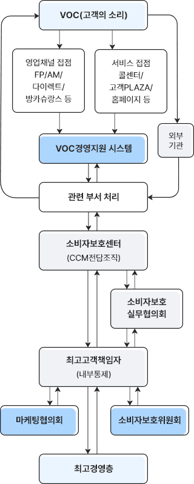

케이스 1 - VOC(고객의 소리) 듣기 위한 방법 첫번째는 외부기관 자료수집 하고 회사내 관련 부서 처리함. 다시 외부기관에 피드백 합니다. 케이스 2 - VOC(고객의 소리) 듣기 위한 방법 두번째는 영업채널 접점 FP/AM/다이렉트/방카슈랑스 또는 서비스 접점 콜센터/고객PLAZA/홈페이지 통해 VOC경영지원 시스템으로 자료수집하여 회사내 관련 부서 처리 합니다. 보고 된 내용를 바탕으로 소비자보호센터(CCM전담조직)이 소비자보호 실무 협의회를 거쳐, 최고고객책임자(내부통제)에게 보고 되며. 마케팅협의회 또는 소비자 보호위원회 권고를 받아 최고경영층에 보고 됩니다.
- 소비자보호센터(CCM 전담조직)란?
최고고객책임자 산하에 CCM 전담조직인 소비자보호센터가 있고, 각 지역에 고객불만 처리 담당조직인 지역소비자보호센터가 설치되어 고객불만 예방과 처리를 담당합니다.
- 최고고객책임자(내부통제)란?
최고고객책임자는 소비자보호센터, 상품모니터링센터 등 고객서비스와 관련된 업무를 담당하고 있어 최고고객책임자로서 적절한 위치에 있습니다.